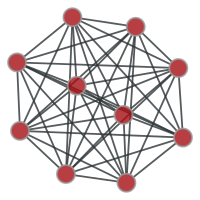
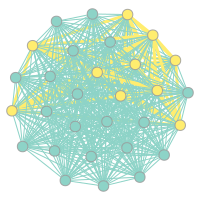
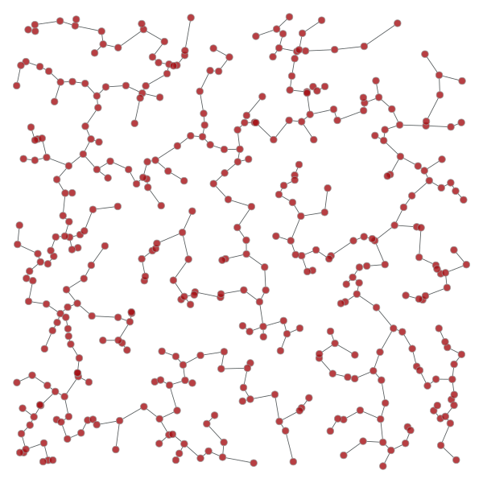
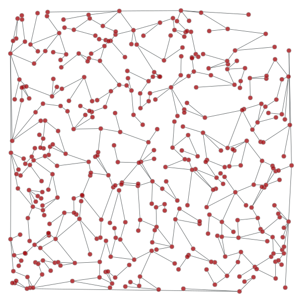
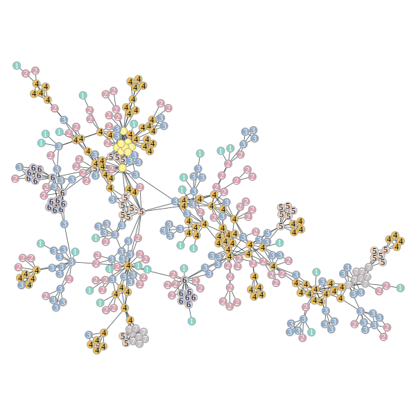
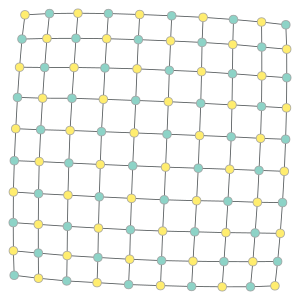
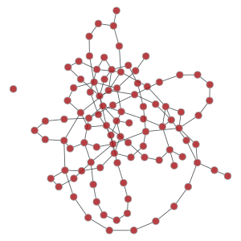
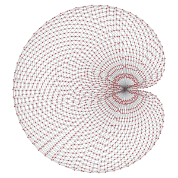
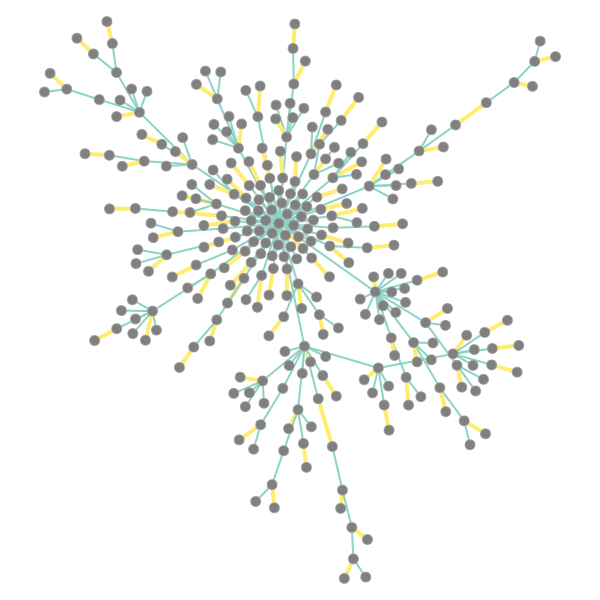
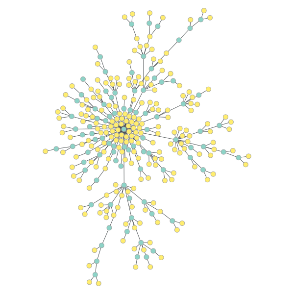

graph_tool.topology - Assessing graph topology¶
Summary¶
shortest_distance |
Calculate the distance from a source to a target vertex, or to of all vertices from a given source, or the all pairs shortest paths, if the source is not specified. |
shortest_path |
Return the shortest path from source to target. |
pseudo_diameter |
Compute the pseudo-diameter of the graph. |
similarity |
Return the adjacency similarity between the two graphs. |
isomorphism |
Check whether two graphs are isomorphic. |
subgraph_isomorphism |
Obtain all subgraph isomorphisms of sub in g (or at most max_n subgraphs, if max_n > 0). |
mark_subgraph |
Mark a given subgraph sub on the graph g. |
max_cardinality_matching |
Find a maximum cardinality matching in the graph. |
max_independent_vertex_set |
Find a maximal independent vertex set in the graph. |
min_spanning_tree |
Return the minimum spanning tree of a given graph. |
random_spanning_tree |
Return a random spanning tree of a given graph, which can be directed or undirected. |
dominator_tree |
Return a vertex property map the dominator vertices for each vertex. |
topological_sort |
Return the topological sort of the given graph. |
transitive_closure |
Return the transitive closure graph of g. |
tsp_tour |
Return a traveling salesman tour of the graph, which is guaranteed to be twice as long as the optimal tour in the worst case. |
sequential_vertex_coloring |
Returns a vertex coloring of the graph. |
label_components |
Label the components to which each vertex in the graph belongs. |
label_biconnected_components |
Label the edges of biconnected components, and the vertices which are articulation points. |
label_largest_component |
Label the largest component in the graph. |
label_out_component |
Label the out-component (or simply the component for undirected graphs) of a root vertex. |
kcore_decomposition |
Perform a k-core decomposition of the given graph. |
is_bipartite |
Test if the graph is bipartite. |
is_DAG |
Return True if the graph is a directed acyclic graph (DAG). |
is_planar |
Test if the graph is planar. |
make_maximal_planar |
Add edges to the graph to make it maximally planar. |
edge_reciprocity |
Calculate the edge reciprocity of the graph. |
Contents¶
-
graph_tool.topology.similarity(g1, g2, label1=None, label2=None, norm=True)[source]¶ Return the adjacency similarity between the two graphs.
Parameters: g1 :
GraphFirst graph to be compared.
g2 :
GraphSecond graph to be compared.
label1 :
PropertyMap(optional, default:None)Vertex labels for the first graph to be used in comparison. If not supplied, the vertex indexes are used.
label2 :
PropertyMap(optional, default:None)Vertex labels for the second graph to be used in comparison. If not supplied, the vertex indexes are used.
norm : bool (optional, default:
True)If
True, the returned value is normalized by the total number of edges.Returns: similarity : float
Adjacency similarity value.
Notes
The adjacency similarity is the sum of equal entries in the adjacency matrix, given a vertex ordering determined by the vertex labels. In other words it counts the number of edges which have the same source and target labels in both graphs.
The algorithm runs with complexity \(O(E_1 + V_1 + E_2 + V_2)\).
Examples
>>> g = gt.random_graph(100, lambda: (3,3)) >>> u = g.copy() >>> gt.similarity(u, g) 1.0 >>> gt.random_rewire(u) 24 >>> gt.similarity(u, g) 0.04666666666666667
-
graph_tool.topology.isomorphism(g1, g2, vertex_inv1=None, vertex_inv2=None, isomap=False)[source]¶ Check whether two graphs are isomorphic.
Parameters: g1 :
GraphFirst graph.
g2 :
GraphSecond graph.
vertex_inv1 :
PropertyMap(optional, default: None)Vertex invariant of the first graph. Only vertices with with the same invariants are considered in the isomorphism.
vertex_inv2 :
PropertyMap(optional, default: None)Vertex invariant of the second graph. Only vertices with with the same invariants are considered in the isomorphism.
isomap :
bool(optional, default:False)If
True, a vertexPropertyMapwith the isomorphism mapping is returned as well.Returns: is_isomorphism :
boolTrueif both graphs are isomorphic, otherwiseFalse.isomap :
PropertyMapIsomorphism mapping corresponding to a property map belonging to the first graph which maps its vertices to their corresponding vertices of the second graph.
Examples
>>> g = gt.random_graph(100, lambda: (3,3)) >>> g2 = gt.Graph(g) >>> gt.isomorphism(g, g2) True >>> g.add_edge(g.vertex(0), g.vertex(1)) <...> >>> gt.isomorphism(g, g2) False
-
graph_tool.topology.subgraph_isomorphism(sub, g, max_n=0, vertex_label=None, edge_label=None, induced=False, subgraph=True)[source]¶ Obtain all subgraph isomorphisms of sub in g (or at most max_n subgraphs, if max_n > 0).
Parameters: sub :
GraphSubgraph for which to be searched.
g :
GraphGraph in which the search is performed.
max_n : int (optional, default: 0)
Maximum number of matches to find. If max_n == 0, all matches are found.
vertex_label : pair of
PropertyMap(optional, default: None)If provided, this should be a pair of
PropertyMapobjects, belonging to sub and g (in this order), which specify vertex labels which should match, in addition to the topological isomorphism.edge_label : pair of
PropertyMap(optional, default: None)If provided, this should be a pair of
PropertyMapobjects, belonging to sub and g (in this order), which specify edge labels which should match, in addition to the topological isomorphism.induced : bool (optional, default: False)
If True, only node-induced subgraphs are found.
subgraph : bool (optional, default: True)
If False, all non-subgraph isomorphisms between sub and g are found.
Returns: vertex_maps : list of
PropertyMapobjectsList containing vertex property map objects which indicate different isomorphism mappings. The property maps vertices in sub to the corresponding vertex index in g.
Notes
The implementation is based on the VF2 algorithm, introduced by Cordella et al. [cordella-improved-2001] [cordella-subgraph-2004]. The spatial complexity is of order \(O(V)\), where \(V\) is the (maximum) number of vertices of the two graphs. Time complexity is \(O(V^2)\) in the best case and \(O(V!\times V)\) in the worst case.
References
[cordella-improved-2001] (1, 2) L. P. Cordella, P. Foggia, C. Sansone, and M. Vento, “An improved algorithm for matching large graphs.”, 3rd IAPR-TC15 Workshop on Graph-based Representations in Pattern Recognition, pp. 149-159, Cuen, 2001. http://citeseerx.ist.psu.edu/viewdoc/summary?doi=10.1.1.101.5342 [cordella-subgraph-2004] (1, 2) L. P. Cordella, P. Foggia, C. Sansone, and M. Vento, “A (Sub)Graph Isomorphism Algorithm for Matching Large Graphs.”, IEEE Trans. Pattern Anal. Mach. Intell., vol. 26, no. 10, pp. 1367-1372, 2004. DOI: 10.1109/TPAMI.2004.75 [boost-subgraph-iso] http://www.boost.org/libs/graph/doc/vf2_sub_graph_iso.html [subgraph-isormophism-wikipedia] http://en.wikipedia.org/wiki/Subgraph_isomorphism_problem Examples
 >>> from numpy.random import poisson >>> g = gt.complete_graph(30) >>> sub = gt.complete_graph(10) >>> vm = gt.subgraph_isomorphism(sub, g, max_n=100) >>> print(len(vm)) 100 >>> for i in range(len(vm)): ... g.set_vertex_filter(None) ... g.set_edge_filter(None) ... vmask, emask = gt.mark_subgraph(g, sub, vm[i]) ... g.set_vertex_filter(vmask) ... g.set_edge_filter(emask) ... assert gt.isomorphism(g, sub) >>> g.set_vertex_filter(None) >>> g.set_edge_filter(None) >>> ewidth = g.copy_property(emask, value_type="double") >>> ewidth.a += 0.5 >>> ewidth.a *= 2 >>> gt.graph_draw(g, vertex_fill_color=vmask, edge_color=emask, ... edge_pen_width=ewidth, output_size=(200, 200), ... output="subgraph-iso-embed.pdf") <...> >>> gt.graph_draw(sub, output_size=(200, 200), output="subgraph-iso.pdf") <...>
Left: Subgraph searched, Right: One isomorphic subgraph found in main graph.
-
graph_tool.topology.mark_subgraph(g, sub, vmap, vmask=None, emask=None)[source]¶ Mark a given subgraph sub on the graph g.
The mapping must be provided by the vmap and emap parameters, which map vertices/edges of sub to indexes of the corresponding vertices/edges in g.
This returns a vertex and an edge property map, with value type ‘bool’, indicating whether or not a vertex/edge in g corresponds to the subgraph sub.
-
graph_tool.topology.min_spanning_tree(g, weights=None, root=None, tree_map=None)[source]¶ Return the minimum spanning tree of a given graph.
Parameters: g :
GraphGraph to be used.
weights :
PropertyMap(optional, default: None)The edge weights. If provided, the minimum spanning tree will minimize the edge weights.
root :
Vertex(optional, default: None)Root of the minimum spanning tree. If this is provided, Prim’s algorithm is used. Otherwise, Kruskal’s algorithm is used.
tree_map :
PropertyMap(optional, default: None)If provided, the edge tree map will be written in this property map.
Returns: tree_map :
PropertyMapEdge property map with mark the tree edges: 1 for tree edge, 0 otherwise.
Notes
The algorithm runs with \(O(E\log E)\) complexity, or \(O(E\log V)\) if root is specified.
References
[kruskal-shortest-1956] J. B. Kruskal. “On the shortest spanning subtree of a graph and the traveling salesman problem”, In Proceedings of the American Mathematical Society, volume 7, pages 48-50, 1956. DOI: 10.1090/S0002-9939-1956-0078686-7 [prim-shortest-1957] R. Prim. “Shortest connection networks and some generalizations”, Bell System Technical Journal, 36:1389-1401, 1957. [boost-mst] http://www.boost.org/libs/graph/doc/graph_theory_review.html#sec:minimum-spanning-tree [mst-wiki] http://en.wikipedia.org/wiki/Minimum_spanning_tree Examples
>>> from numpy.random import random >>> g, pos = gt.triangulation(random((400, 2)) * 10, type="delaunay") >>> weight = g.new_edge_property("double") >>> for e in g.edges(): ... weight[e] = linalg.norm(pos[e.target()].a - pos[e.source()].a) >>> tree = gt.min_spanning_tree(g, weights=weight) >>> gt.graph_draw(g, pos=pos, output="triang_orig.pdf") <...> >>> g.set_edge_filter(tree) >>> gt.graph_draw(g, pos=pos, output="triang_min_span_tree.pdf") <...>

Left: Original graph, Right: The minimum spanning tree.
{kind=link}
-
graph_tool.topology.random_spanning_tree(g, weights=None, root=None, tree_map=None)[source]¶ Return a random spanning tree of a given graph, which can be directed or undirected.
Parameters: g :
GraphGraph to be used.
weights :
PropertyMap(optional, default: None)The edge weights. If provided, the probability of a particular spanning tree being selected is the product of its edge weights.
root :
Vertex(optional, default: None)Root of the spanning tree. If not provided, it will be selected randomly.
tree_map :
PropertyMap(optional, default: None)If provided, the edge tree map will be written in this property map.
Returns: tree_map :
PropertyMapEdge property map with mark the tree edges: 1 for tree edge, 0 otherwise.
Notes
The typical running time for random graphs is \(O(N\log N)\).
References
[wilson-generating-1996] David Bruce Wilson, “Generating random spanning trees more quickly than the cover time”, Proceedings of the twenty-eighth annual ACM symposium on Theory of computing, Pages 296-303, ACM New York, 1996, DOI: 10.1145/237814.237880 [boost-rst] http://www.boost.org/libs/graph/doc/random_spanning_tree.html Examples
>>> from numpy.random import random >>> g, pos = gt.triangulation(random((400, 2)) * 10, type="delaunay") >>> weight = g.new_edge_property("double") >>> for e in g.edges(): ... weight[e] = linalg.norm(pos[e.target()].a - pos[e.source()].a) >>> tree = gt.random_spanning_tree(g, weights=weight) >>> gt.graph_draw(g, pos=pos, output="rtriang_orig.pdf") <...> >>> g.set_edge_filter(tree) >>> gt.graph_draw(g, pos=pos, output="triang_random_span_tree.pdf") <...>
Left: Original graph, Right: A random spanning tree.
{kind=link}
{kind=link}
-
graph_tool.topology.dominator_tree(g, root, dom_map=None)[source]¶ Return a vertex property map the dominator vertices for each vertex.
Parameters: g :
GraphGraph to be used.
root :
VertexThe root vertex.
dom_map :
PropertyMap(optional, default: None)If provided, the dominator map will be written in this property map.
Returns: dom_map :
PropertyMapThe dominator map. It contains for each vertex, the index of its dominator vertex.
Notes
A vertex u dominates a vertex v, if every path of directed graph from the entry to v must go through u.
The algorithm runs with \(O((V+E)\log (V+E))\) complexity.
References
[dominator-bgl] http://www.boost.org/libs/graph/doc/lengauer_tarjan_dominator.htm Examples
>>> g = gt.random_graph(100, lambda: (2, 2)) >>> tree = gt.min_spanning_tree(g) >>> g.set_edge_filter(tree) >>> root = [v for v in g.vertices() if v.in_degree() == 0] >>> dom = gt.dominator_tree(g, root[0]) >>> print(dom.a) [0 0 0 0 0 0 0 0 0 0 0 0 0 0 0 0 0 0 0 0 0 0 0 0 0 0 0 0 0 0 0 0 0 0 0 0 0 0 0 0 0 0 0 0 0 0 0 0 1 0 0 0 0 0 0 0 0 0 0 0 0 0 0 0 0 0 0 0 0 0 0 0 0 0 0 0 0 0 0 0 0 0 0 0 0 0 0 0 0 0 0 0 0 0 0 0 0 0 0 0]
-
graph_tool.topology.topological_sort(g)[source]¶ Return the topological sort of the given graph. It is returned as an array of vertex indexes, in the sort order.
Notes
The topological sort algorithm creates a linear ordering of the vertices such that if edge (u,v) appears in the graph, then u comes before v in the ordering. The graph must be a directed acyclic graph (DAG).
The time complexity is \(O(V + E)\).
References
[topological-boost] http://www.boost.org/libs/graph/doc/topological_sort.html [topological-wiki] http://en.wikipedia.org/wiki/Topological_sorting Examples
>>> g = gt.random_graph(30, lambda: (3, 3)) >>> tree = gt.min_spanning_tree(g) >>> g.set_edge_filter(tree) >>> sort = gt.topological_sort(g) >>> print(sort) [29 28 27 26 23 24 22 21 20 18 17 16 15 14 11 10 9 6 5 4 19 12 13 3 2 25 1 0 7 8]
-
graph_tool.topology.transitive_closure(g)[source]¶ Return the transitive closure graph of g.
Notes
The transitive closure of a graph G = (V,E) is a graph G* = (V,E*) such that E* contains an edge (u,v) if and only if G contains a path (of at least one edge) from u to v. The transitive_closure() function transforms the input graph g into the transitive closure graph tc.
The time complexity (worst-case) is \(O(VE)\).
References
[transitive-boost] http://www.boost.org/libs/graph/doc/transitive_closure.html [transitive-wiki] http://en.wikipedia.org/wiki/Transitive_closure Examples
>>> g = gt.random_graph(30, lambda: (3, 3)) >>> tc = gt.transitive_closure(g)
-
graph_tool.topology.label_components(g, vprop=None, directed=None, attractors=False)[source]¶ Label the components to which each vertex in the graph belongs. If the graph is directed, it finds the strongly connected components.
A property map with the component labels is returned, together with an histogram of component labels.
Parameters: g :
GraphGraph to be used.
vprop :
PropertyMap(optional, default:None)Vertex property to store the component labels. If none is supplied, one is created.
directed : bool (optional, default:
None)Treat graph as directed or not, independently of its actual directionality.
attractors : bool (optional, default:
False)If
True, and the graph is directed, an additional array with Boolean values is returned, specifying if the strongly connected components are attractors or not.Returns: comp :
PropertyMapVertex property map with component labels.
hist :
ndarrayHistogram of component labels.
is_attractor :
ndarrayA Boolean array specifying if the strongly connected components are attractors or not. This returned only if
attractors == True, and the graph is directed.Notes
The components are arbitrarily labeled from 0 to N-1, where N is the total number of components.
The algorithm runs in \(O(V + E)\) time.
Examples
>>> g = gt.random_graph(100, lambda: (poisson(2), poisson(2))) >>> comp, hist, is_attractor = gt.label_components(g, attractors=True) >>> print(comp.a) [13 13 13 13 14 12 13 15 16 13 17 19 13 13 13 20 13 13 13 10 13 13 22 13 13 4 13 13 2 23 13 13 24 13 13 26 27 13 13 13 13 0 13 13 3 13 13 13 28 1 6 13 13 13 13 5 13 13 13 13 13 13 13 9 13 11 13 29 13 13 13 13 18 13 30 31 13 13 32 13 33 34 35 13 13 21 13 25 8 36 13 13 13 13 13 37 13 13 7 13] >>> print(hist) [ 1 1 1 1 1 1 1 1 1 1 1 1 1 63 1 1 1 1 1 1 1 1 1 1 1 1 1 1 1 1 1 1 1 1 1 1 1 1] >>> print(is_attractor) [ True False True True True False False True False True True True True False True False False False False False False False False False False False False False False False False False False True False True False False]
-
graph_tool.topology.label_largest_component(g, directed=None)[source]¶ Label the largest component in the graph. If the graph is directed, then the largest strongly connected component is labelled.
A property map with a boolean label is returned.
Parameters: g :
GraphGraph to be used.
directed : bool (optional, default:None)
Treat graph as directed or not, independently of its actual directionality.
Returns: comp :
PropertyMapBoolean vertex property map which labels the largest component.
Notes
The algorithm runs in \(O(V + E)\) time.
Examples
>>> g = gt.random_graph(100, lambda: poisson(1), directed=False) >>> l = gt.label_largest_component(g) >>> print(l.a) [0 0 0 0 1 0 0 0 0 0 0 1 0 0 0 0 0 0 0 0 0 0 1 0 0 1 0 0 0 1 0 0 0 0 0 0 0 1 0 0 0 1 0 0 0 1 0 0 0 1 0 0 0 0 0 0 0 0 1 0 0 0 0 1 0 0 0 0 0 0 1 0 0 0 0 0 1 0 0 0 0 0 0 0 0 1 0 0 0 1 1 0 0 0 0 1 0 0 1 0] >>> u = gt.GraphView(g, vfilt=l) # extract the largest component as a graph >>> print(u.num_vertices()) 18
-
graph_tool.topology.label_out_component(g, root)[source]¶ Label the out-component (or simply the component for undirected graphs) of a root vertex.
Parameters: g :
GraphGraph to be used.
root :
VertexThe root vertex.
Returns: comp :
PropertyMapBoolean vertex property map which labels the out-component.
Notes
The algorithm runs in \(O(V + E)\) time.
Examples
>>> g = gt.random_graph(100, lambda: poisson(2.2), directed=False) >>> l = gt.label_out_component(g, g.vertex(2)) >>> print(l.a) [1 1 1 1 1 1 1 0 1 1 1 0 1 1 0 1 1 1 0 1 1 0 1 1 1 1 1 1 1 1 0 0 0 1 1 1 1 1 1 0 1 1 1 1 1 1 1 1 1 1 1 1 1 1 0 1 1 1 1 1 1 1 1 1 1 0 0 1 1 1 1 1 0 0 1 1 0 1 1 1 1 1 1 1 1 1 1 1 1 1 1 0 1 1 1 0 1 1 1 0]
The in-component can be obtained by reversing the graph.
>>> l = gt.label_out_component(gt.GraphView(g, reversed=True, directed=True), ... g.vertex(1)) >>> print(l.a) [0 1 1 1 1 0 1 0 0 0 0 0 0 0 0 0 1 1 0 0 1 0 0 1 1 0 0 0 1 1 0 0 0 0 1 0 1 1 0 0 0 0 0 0 0 1 0 0 0 1 0 1 0 1 0 1 1 1 1 0 0 0 1 1 0 0 0 0 0 0 0 1 0 0 1 0 0 0 0 1 1 1 0 0 1 1 0 0 0 1 1 0 1 1 0 0 1 0 1 0]
-
graph_tool.topology.label_biconnected_components(g, eprop=None, vprop=None)[source]¶ Label the edges of biconnected components, and the vertices which are articulation points.
An edge property map with the component labels is returned, together a boolean vertex map marking the articulation points, and an histogram of component labels.
Parameters: g :
GraphGraph to be used.
eprop :
PropertyMap(optional, default: None)Edge property to label the biconnected components.
vprop :
PropertyMap(optional, default: None)Vertex property to mark the articulation points. If none is supplied, one is created.
Returns: bicomp :
PropertyMapEdge property map with the biconnected component labels.
articulation :
PropertyMapBoolean vertex property map which has value 1 for each vertex which is an articulation point, and zero otherwise.
nc : int
Number of biconnected components.
Notes
A connected graph is biconnected if the removal of any single vertex (and all edges incident on that vertex) can not disconnect the graph. More generally, the biconnected components of a graph are the maximal subsets of vertices such that the removal of a vertex from a particular component will not disconnect the component. Unlike connected components, vertices may belong to multiple biconnected components: those vertices that belong to more than one biconnected component are called “articulation points” or, equivalently, “cut vertices”. Articulation points are vertices whose removal would increase the number of connected components in the graph. Thus, a graph without articulation points is biconnected. Vertices can be present in multiple biconnected components, but each edge can only be contained in a single biconnected component.
The algorithm runs in \(O(V + E)\) time.
Examples
>>> g = gt.random_graph(100, lambda: poisson(2), directed=False) >>> comp, art, hist = gt.label_biconnected_components(g) >>> print(comp.a) [31 42 41 41 41 21 2 41 41 19 41 33 41 41 12 41 40 41 41 41 41 41 41 8 41 10 41 32 28 30 41 41 41 5 41 41 41 41 39 38 41 41 41 41 45 44 41 41 22 41 41 41 0 41 41 41 41 41 41 41 41 7 13 41 20 41 41 41 41 34 9 41 41 4 43 18 41 41 15 29 1 41 41 41 41 6 41 25 23 35 16 24 37 11 3 36 17 26 27 14 41] >>> print(art.a) [1 0 1 1 0 1 0 0 0 1 0 0 1 0 0 1 0 1 0 0 0 1 0 0 0 0 0 0 0 1 0 0 0 1 1 0 0 1 1 0 0 1 0 0 0 1 1 0 0 0 1 0 1 0 1 0 0 1 0 0 0 0 1 1 0 1 0 0 0 0 0 0 1 1 1 0 0 0 0 0 0 1 1 0 0 0 1 0 1 1 0 0 0 1 0 0 0 1 0 0] >>> print(hist) [ 1 1 1 1 1 1 1 1 1 1 1 1 1 1 1 1 1 1 1 1 1 1 1 1 1 1 1 1 1 1 1 1 1 1 1 1 1 1 1 1 1 56 1 1 1 1]
-
graph_tool.topology.kcore_decomposition(g, deg='out', vprop=None)[source]¶ Perform a k-core decomposition of the given graph.
Parameters: g :
GraphGraph to be used.
deg : string
Degree to be used for the decomposition. It can be either “in”, “out” or “total”, for in-, out-, or total degree of the vertices.
vprop :
PropertyMap(optional, default:None)Vertex property to store the decomposition. If
Noneis supplied, one is created.Returns: kval :
PropertyMapVertex property map with the k-core decomposition, i.e. a given vertex v belongs to the
kval[v]-core.Notes
The k-core is a maximal set of vertices such that its induced subgraph only contains vertices with degree larger than or equal to k.
This algorithm is described in [batagelk-algorithm] and runs in \(O(V + E)\) time.
References
[k-core] http://en.wikipedia.org/wiki/Degeneracy_%28graph_theory%29 [batagelk-algorithm] (1, 2) Vladimir Batagelj, Matjaž Zaveršnik, “Fast algorithms for determining (generalized) core groups in social networks”, Advances in Data Analysis and Classification Volume 5, Issue 2, pp 129-145 (2011), DOI: 10.1007/s11634-010-0079-y, arXiv: cs/0310049 Examples
>>> g = gt.collection.data["netscience"] >>> g = gt.GraphView(g, vfilt=gt.label_largest_component(g)) >>> kcore = gt.kcore_decomposition(g) >>> gt.graph_draw(g, pos=g.vp["pos"], vertex_fill_color=kcore, vertex_text=kcore, output="netsci-kcore.pdf") <...>
K-core decomposition of a network of network scientists.
-
graph_tool.topology.shortest_distance(g, source=None, target=None, weights=None, max_dist=None, directed=None, dense=False, dist_map=None, pred_map=False)[source]¶ Calculate the distance from a source to a target vertex, or to of all vertices from a given source, or the all pairs shortest paths, if the source is not specified.
Parameters: g :
GraphGraph to be used.
source :
Vertex(optional, default: None)Source vertex of the search. If unspecified, the all pairs shortest distances are computed.
target :
Vertexor iterable of such objects (optional, default: None)Target vertex (or vertices) of the search. If unspecified, the distance to all vertices from the source will be computed.
weights :
PropertyMap(optional, default: None)The edge weights. If provided, the minimum spanning tree will minimize the edge weights.
max_dist : scalar value (optional, default: None)
If specified, this limits the maximum distance of the vertices searched. This parameter has no effect if source is None.
directed : bool (optional, default:None)
Treat graph as directed or not, independently of its actual directionality.
dense : bool (optional, default: False)
If true, and source is None, the Floyd-Warshall algorithm is used, otherwise the Johnson algorithm is used. If source is not None, this option has no effect.
dist_map :
PropertyMap(optional, default: None)Vertex property to store the distances. If none is supplied, one is created.
pred_map : bool (optional, default: False)
If true, a vertex property map with the predecessors is returned. Ignored if source=None.
Returns: dist_map :
PropertyMapVertex property map with the distances from source. If source is ‘None’, it will have a vector value type, with the distances to every vertex.
Notes
If a source is given, the distances are calculated with a breadth-first search (BFS) or Dijkstra’s algorithm [dijkstra], if weights are given. If source is not given, the distances are calculated with Johnson’s algorithm [johnson-apsp]. If dense=True, the Floyd-Warshall algorithm [floyd-warshall-apsp] is used instead.
If source is specified, the algorithm runs in \(O(V + E)\) time, or \(O(V \log V)\) if weights are given. If source is not specified, it runs in \(O(VE\log V)\) time, or \(O(V^3)\) if dense == True.
References
[bfs] Edward Moore, “The shortest path through a maze”, International Symposium on the Theory of Switching (1959), Harvard University Press. [bfs-boost] http://www.boost.org/libs/graph/doc/breadth_first_search.html [dijkstra] E. Dijkstra, “A note on two problems in connexion with graphs.” Numerische Mathematik, 1:269-271, 1959. [dijkstra-boost] http://www.boost.org/libs/graph/doc/dijkstra_shortest_paths.html [johnson-apsp] (1, 2) http://www.boost.org/libs/graph/doc/johnson_all_pairs_shortest.html [floyd-warshall-apsp] (1, 2) http://www.boost.org/libs/graph/doc/floyd_warshall_shortest.html Examples
>>> from numpy.random import poisson >>> g = gt.random_graph(100, lambda: (poisson(3), poisson(3))) >>> dist = gt.shortest_distance(g, source=g.vertex(0)) >>> print(dist.a) [ 0 1 5 4 2147483647 4 9 5 8 5 7 6 3 5 6 8 3 3 5 6 2147483647 1 4 5 5 2 5 7 4 5 5 5 4 4 5 2 5 2147483647 5 2 2147483647 6 5 6 6 2 5 4 3 6 5 4 4 5 3 3 5 5 1 5 4 6 3 4 3 3 7 5 5 4 2147483647 2147483647 2 5 3 5 5 6 3 5 6 6 5 4 5 3 6 3 4 2147483647 4 6 4 4 4 4 6 5 4 4] >>> >>> dist = gt.shortest_distance(g) >>> print(dist[g.vertex(0)].a) [ 0 1 5 4 2147483647 4 9 5 8 5 7 6 3 5 6 8 3 3 5 6 2147483647 1 4 5 5 2 5 7 4 5 5 5 4 4 5 2 5 2147483647 5 2 2147483647 6 5 6 6 2 5 4 3 6 5 4 4 5 3 3 5 5 1 5 4 6 3 4 3 3 7 5 5 4 2147483647 2147483647 2 5 3 5 5 6 3 5 6 6 5 4 5 3 6 3 4 2147483647 4 6 4 4 4 4 6 5 4 4] >>> dist = gt.shortest_distance(g, source=g.vertex(0), target=g.vertex(2)) >>> print (dist) 5 >>> dist = gt.shortest_distance(g, source=g.vertex(0), target=[g.vertex(2), g.vertex(6)]) >>> print (dist) [5 9]
-
graph_tool.topology.shortest_path(g, source, target, weights=None, pred_map=None)[source]¶ Return the shortest path from source to target.
Parameters: g :
GraphGraph to be used.
source :
VertexSource vertex of the search.
target :
VertexTarget vertex of the search.
weights :
PropertyMap(optional, default: None)The edge weights.
pred_map :
PropertyMap(optional, default: None)Vertex property map with the predecessors in the search tree. If this is provided, the shortest paths are not computed, and are obtained directly from this map.
Returns: vertex_list : list of
VertexList of vertices from source to target in the shortest path.
edge_list : list of
EdgeList of edges from source to target in the shortest path.
Notes
The paths are computed with a breadth-first search (BFS) or Dijkstra’s algorithm [dijkstra], if weights are given.
The algorithm runs in \(O(V + E)\) time, or \(O(V \log V)\) if weights are given.
References
[bfs] Edward Moore, “The shortest path through a maze”, International Symposium on the Theory of Switching (1959), Harvard University Press [bfs-boost] http://www.boost.org/libs/graph/doc/breadth_first_search.html [dijkstra] E. Dijkstra, “A note on two problems in connexion with graphs.” Numerische Mathematik, 1:269-271, 1959. [dijkstra-boost] http://www.boost.org/libs/graph/doc/dijkstra_shortest_paths.html Examples
>>> from numpy.random import poisson >>> g = gt.random_graph(300, lambda: (poisson(4), poisson(4))) >>> vlist, elist = gt.shortest_path(g, g.vertex(10), g.vertex(11)) >>> print([str(v) for v in vlist]) ['10', '11'] >>> print([str(e) for e in elist]) ['(10, 11)']
-
graph_tool.topology.pseudo_diameter(g, source=None, weights=None)[source]¶ Compute the pseudo-diameter of the graph.
Parameters: g :
GraphGraph to be used.
source :
Vertex(optional, default: None)Source vertex of the search. If not supplied, the first vertex in the graph will be chosen.
weights :
PropertyMap(optional, default: None)The edge weights.
Returns: pseudo_diameter : int
The pseudo-diameter of the graph.
end_points : pair of
VertexThe two vertices which correspond to the pseudo-diameter found.
Notes
The pseudo-diameter is an approximate graph diameter. It is obtained by starting from a vertex source, and finds a vertex target that is farthest away from source. This process is repeated by treating target as the new starting vertex, and ends when the graph distance no longer increases. A vertex from the last level set that has the smallest degree is chosen as the final starting vertex u, and a traversal is done to see if the graph distance can be increased. This graph distance is taken to be the pseudo-diameter.
The paths are computed with a breadth-first search (BFS) or Dijkstra’s algorithm [dijkstra], if weights are given.
The algorithm runs in \(O(V + E)\) time, or \(O(V \log V)\) if weights are given.
References
[pseudo-diameter] http://en.wikipedia.org/wiki/Distance_%28graph_theory%29 Examples
>>> from numpy.random import poisson >>> g = gt.random_graph(300, lambda: (poisson(3), poisson(3))) >>> dist, ends = gt.pseudo_diameter(g) >>> print(dist) 10.0 >>> print(int(ends[0]), int(ends[1])) 0 165
-
graph_tool.topology.is_bipartite(g, partition=False)[source]¶ Test if the graph is bipartite.
Parameters: g :
GraphGraph to be used.
partition : bool (optional, default:
False)If
True, return the two partitions in case the graph is bipartite.Returns: is_bipartite : bool
Whether or not the graph is bipartite.
partition :
PropertyMap(only if partition=True)A vertex property map with the graph partitioning (or None) if the graph is not bipartite.
Notes
An undirected graph is bipartite if one can partition its set of vertices into two sets, such that all edges go from one set to the other.
This algorithm runs in \(O(V + E)\) time.
References
[boost-bipartite] http://www.boost.org/libs/graph/doc/is_bipartite.html Examples
>>> g = gt.lattice([10, 10]) >>> is_bi, part = gt.is_bipartite(g, partition=True) >>> print(is_bi) True >>> gt.graph_draw(g, vertex_fill_color=part, output_size=(300, 300), output="bipartite.pdf") <...>
Bipartition of a 2D lattice.
-
graph_tool.topology.is_planar(g, embedding=False, kuratowski=False)[source]¶ Test if the graph is planar.
Parameters: g :
GraphGraph to be used.
embedding : bool (optional, default: False)
If true, return a mapping from vertices to the clockwise order of out-edges in the planar embedding.
kuratowski : bool (optional, default: False)
If true, the minimal set of edges that form the obstructing Kuratowski subgraph will be returned as a property map, if the graph is not planar.
Returns: is_planar : bool
Whether or not the graph is planar.
embedding :
PropertyMap(only if embedding=True)A vertex property map with the out-edges indexes in clockwise order in the planar embedding,
kuratowski :
PropertyMap(only if kuratowski=True)An edge property map with the minimal set of edges that form the obstructing Kuratowski subgraph (if the value of kuratowski[e] is 1, the edge belongs to the set)
Notes
A graph is planar if it can be drawn in two-dimensional space without any of its edges crossing. This algorithm performs the Boyer-Myrvold planarity testing [boyer-myrvold]. See [boost-planarity] for more details.
This algorithm runs in \(O(V)\) time.
References
[boyer-myrvold] (1, 2) John M. Boyer and Wendy J. Myrvold, “On the Cutting Edge: Simplified O(n) Planarity by Edge Addition” Journal of Graph Algorithms and Applications, 8(2): 241-273, 2004. http://www.emis.ams.org/journals/JGAA/accepted/2004/BoyerMyrvold2004.8.3.pdf [boost-planarity] http://www.boost.org/libs/graph/doc/boyer_myrvold.html Examples
>>> from numpy.random import random >>> g = gt.triangulation(random((100,2)))[0] >>> p, embed_order = gt.is_planar(g, embedding=True) >>> print(p) True >>> print(list(embed_order[g.vertex(0)])) [0, 1, 24, 23, 22, 21, 20, 19, 18, 17, 16, 15, 14, 13, 12, 11, 10, 9, 8, 7, 6, 5, 4, 3, 2] >>> g = gt.random_graph(100, lambda: 4, directed=False) >>> p, kur = gt.is_planar(g, kuratowski=True) >>> print(p) False >>> g.set_edge_filter(kur, True) >>> gt.graph_draw(g, output_size=(300, 300), output="kuratowski.pdf") <...>
Obstructing Kuratowski subgraph of a random graph.
-
graph_tool.topology.make_maximal_planar(g, unfilter=False)[source]¶ Add edges to the graph to make it maximally planar.
Parameters: g :
GraphGraph to be used. It must be a biconnected planar graph with at least 3 vertices.
Notes
A graph is maximal planar if no additional edges can be added to it without creating a non-planar graph. By Euler’s formula, a maximal planar graph with V > 2 vertices always has 3V - 6 edges and 2V - 4 faces.
The input graph to make_maximal_planar() must be a biconnected planar graph with at least 3 vertices.
This algorithm runs in \(O(V + E)\) time.
References
[boost-planarity] http://www.boost.org/libs/graph/doc/make_maximal_planar.html Examples
>>> g = gt.lattice([42, 42]) >>> gt.make_maximal_planar(g) >>> gt.is_planar(g) True >>> print(g.num_vertices(), g.num_edges()) 1764 5286 >>> gt.graph_draw(g, output_size=(300, 300), output="maximal_planar.pdf") <...>
A maximally planar graph.
-
graph_tool.topology.is_DAG(g)[source]¶ Return True if the graph is a directed acyclic graph (DAG).
Notes
The time complexity is \(O(V + E)\).
References
[DAG-wiki] http://en.wikipedia.org/wiki/Directed_acyclic_graph Examples
>>> g = gt.random_graph(30, lambda: (3, 3)) >>> print(gt.is_DAG(g)) False >>> tree = gt.min_spanning_tree(g) >>> g.set_edge_filter(tree) >>> print(gt.is_DAG(g)) True
-
graph_tool.topology.max_cardinality_matching(g, heuristic=False, weight=None, minimize=True, match=None)[source]¶ Find a maximum cardinality matching in the graph.
Parameters: g :
GraphGraph to be used.
heuristic : bool (optional, default: False)
If true, a random heuristic will be used, which runs in linear time.
weight :
PropertyMap(optional, default: None)If provided, the matching will minimize the edge weights (or maximize if
minimize == False). This option has no effect ifheuristic == False.minimize : bool (optional, default: True)
If True, the matching will minimize the weights, otherwise they will be maximized. This option has no effect if
heuristic == False.match :
PropertyMap(optional, default: None)Edge property map where the matching will be specified.
Returns: match :
PropertyMapBoolean edge property map where the matching is specified.
Notes
A matching is a subset of the edges of a graph such that no two edges share a common vertex. A maximum cardinality matching has maximum size over all matchings in the graph.
If the parameter
weightis provided, as well asheuristic == Truea matching with maximum cardinality and maximum (or minimum) weight is returned.If
heuristic == Truethe algorithm does not necessarily return the maximum matching, instead the focus is to run on linear time.This algorithm runs in time \(O(EV\times\alpha(E,V))\), where \(\alpha(m,n)\) is a slow growing function that is at most 4 for any feasible input. If heuristic == True, the algorithm runs in time \(O(V + E)\).
For a more detailed description, see [boost-max-matching].
References
[boost-max-matching] (1, 2) http://www.boost.org/libs/graph/doc/maximum_matching.html [matching-heuristic] B. Hendrickson and R. Leland. “A Multilevel Algorithm for Partitioning Graphs.” In S. Karin, editor, Proc. Supercomputing ’95, San Diego. ACM Press, New York, 1995, DOI: 10.1145/224170.224228 Examples
>>> g = gt.GraphView(gt.price_network(300), directed=False) >>> res = gt.max_cardinality_matching(g) >>> print(res[1]) True >>> w = res[0].copy("double") >>> w.a = 2 * w.a + 2 >>> gt.graph_draw(g, edge_color=res[0], edge_pen_width=w, vertex_fill_color="grey", ... output="max_card_match.pdf") <...>
Edges belonging to the matching are in yellow.
-
graph_tool.topology.max_independent_vertex_set(g, high_deg=False, mivs=None)[source]¶ Find a maximal independent vertex set in the graph.
Parameters: g :
GraphGraph to be used.
high_deg : bool (optional, default: False)
If True, vertices with high degree will be included first in the set, otherwise they will be included last.
mivs :
PropertyMap(optional, default: None)Vertex property map where the vertex set will be specified.
Returns: mivs :
PropertyMapBoolean vertex property map where the set is specified.
Notes
A maximal independent vertex set is an independent set such that adding any other vertex to the set forces the set to contain an edge between two vertices of the set.
This implements the algorithm described in [mivs-luby], which runs in time \(O(V + E)\).
References
[mivs-wikipedia] http://en.wikipedia.org/wiki/Independent_set_%28graph_theory%29 [mivs-luby] (1, 2) Luby, M., “A simple parallel algorithm for the maximal independent set problem”, Proc. 17th Symposium on Theory of Computing, Association for Computing Machinery, pp. 1-10, (1985) DOI: 10.1145/22145.22146. Examples
>>> g = gt.GraphView(gt.price_network(300), directed=False) >>> res = gt.max_independent_vertex_set(g) >>> gt.graph_draw(g, vertex_fill_color=res, output="mivs.pdf") <...>
Vertices belonging to the set are in yellow.
-
graph_tool.topology.edge_reciprocity(g)[source]¶ Calculate the edge reciprocity of the graph.
Parameters: g :
GraphGraph to be used edges.
Returns: reciprocity : float
The reciprocity value.
Notes
The edge [reciprocity] is defined as \(E^\leftrightarrow/E\), where \(E^\leftrightarrow\) and \(E\) are the number of bidirectional and all edges in the graph, respectively.
The algorithm runs with complexity \(O(E + V)\).
References
[reciprocity] (1, 2) S. Wasserman and K. Faust, “Social Network Analysis”. (Cambridge University Press, Cambridge, 1994) [lopez-reciprocity-2007] Gorka Zamora-López, Vinko Zlatić, Changsong Zhou, Hrvoje Štefančić, and Jürgen Kurths “Reciprocity of networks with degree correlations and arbitrary degree sequences”, Phys. Rev. E 77, 016106 (2008) DOI: 10.1103/PhysRevE.77.016106, arXiv: 0706.3372 Examples
>>> g = gt.Graph() >>> g.add_vertex(2) <...> >>> g.add_edge(g.vertex(0), g.vertex(1)) <Edge object with source '0' and target '1' at 0x33bc710> >>> gt.edge_reciprocity(g) 0.0 >>> g.add_edge(g.vertex(1), g.vertex(0)) <Edge object with source '1' and target '0' at 0x33bc7a0> >>> gt.edge_reciprocity(g) 1.0
-
graph_tool.topology.tsp_tour(g, src, weight=None)[source]¶ Return a traveling salesman tour of the graph, which is guaranteed to be twice as long as the optimal tour in the worst case.
Parameters: g :
GraphGraph to be used.
src :
VertexThe source (and target) of the tour.
weight :
PropertyMap(optional, default: None)Edge weights.
Returns: tour :
numpy.ndarrayList of vertex indexes corresponding to the tour.
Notes
The algorithm runs with \(O(E\log V)\) complexity.
References
[tsp-bgl] http://www.boost.org/libs/graph/doc/metric_tsp_approx.html [tsp] http://en.wikipedia.org/wiki/Travelling_salesman_problem Examples
>>> g = gt.lattice([10, 10]) >>> tour = gt.tsp_tour(g, g.vertex(0)) >>> print(tour) [ 0 1 2 11 12 21 22 31 32 41 42 51 52 61 62 71 72 81 82 83 73 84 74 85 75 86 76 87 77 88 78 68 58 67 57 66 56 65 55 64 54 63 53 43 33 23 13 3 4 5 6 7 8 89 79 69 59 49 39 48 38 47 37 46 36 45 35 44 34 24 14 25 15 26 16 27 17 28 18 29 19 9 91 92 93 94 95 96 97 98 99 10 20 30 40 50 60 70 80 90 0]
-
graph_tool.topology.sequential_vertex_coloring(g, order=None, color=None)[source]¶ Returns a vertex coloring of the graph.
Parameters: g :
GraphGraph to be used.
order :
PropertyMap(optional, default: None)Order with which the vertices will be colored.
color :
PropertyMap(optional, default: None)Integer-valued vertex property map to store the colors.
Returns: color :
PropertyMapInteger-valued vertex property map with the vertex colors.
Notes
The time complexity is \(O(V(d+k))\), where \(V\) is the number of vertices, \(d\) is the maximum degree of the vertices in the graph, and \(k\) is the number of colors used.
References
[sgc-bgl] http://www.boost.org/libs/graph/doc/sequential_vertex_coloring.html [graph-coloring] http://en.wikipedia.org/wiki/Graph_coloring Examples
>>> g = gt.lattice([10, 10]) >>> colors = gt.sequential_vertex_coloring(g) >>> print(colors.a) [0 1 0 1 0 1 0 1 0 1 1 0 1 0 1 0 1 0 1 0 0 1 0 1 0 1 0 1 0 1 1 0 1 0 1 0 1 0 1 0 0 1 0 1 0 1 0 1 0 1 1 0 1 0 1 0 1 0 1 0 0 1 0 1 0 1 0 1 0 1 1 0 1 0 1 0 1 0 1 0 0 1 0 1 0 1 0 1 0 1 1 0 1 0 1 0 1 0 1 0]